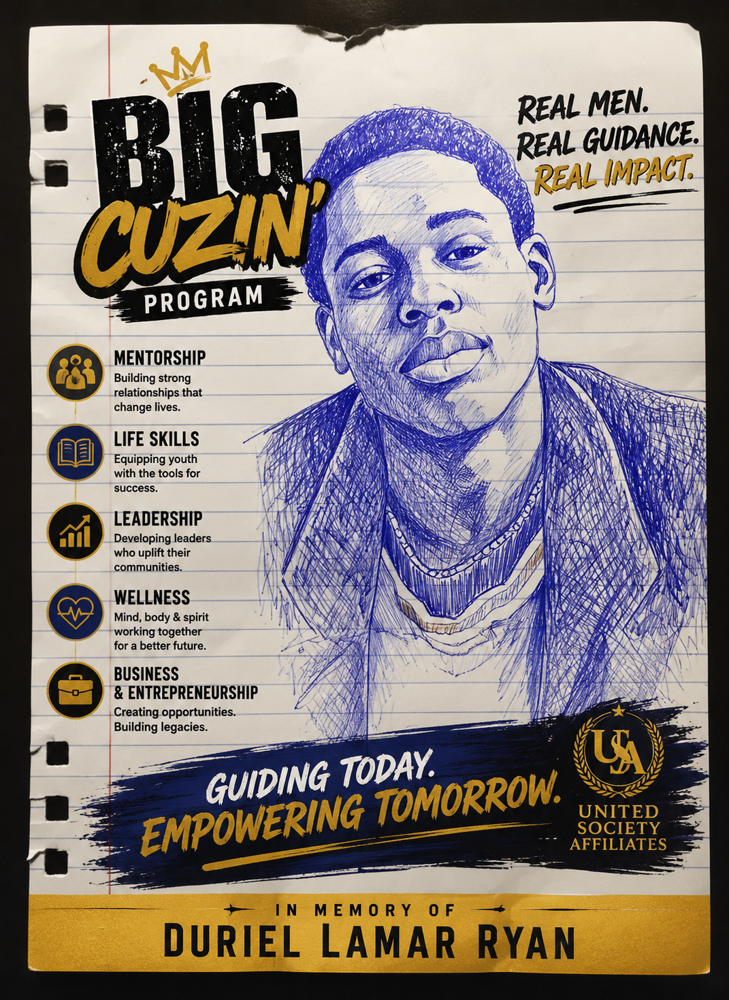

Real Men. Real Guidance. Real Impact.
Guiding Today. Empowering Tomorrow.

Big Cuzin' is a youth mentorship and leadership development program of United Society Affiliates, built on the belief that every young person deserves access to real guidance from real men who have walked the walk.
The program empowers at-risk youth through structured mentorship, life skills training, leadership development, wellness education, and entrepreneurship — creating a direct pathway from pressure to purpose and potential.
Rooted in community and dedicated to legacy, Big Cuzin' is designed to transform lives by equipping the next generation with the tools, relationships, and confidence they need to lead.
📄 View Program OverviewBuilding strong relationships that change lives
Equipping youth with the tools for success
Developing leaders who uplift their communities
Mind, body & spirit working together for a better future
Creating opportunities. Building legacies.
Built From Pressure. Designed For Leadership.
The FORMIDABLE Workshop is a transformational leadership and empowerment initiative created to support at-risk youth ages 13–21. It provides structured programming designed to redirect youth toward productive futures through accountability, discipline, and opportunity.
"Pressure will either break you or build you. We build here."
Build confidence, master discipline, strengthen focus
Develop character, lead with purpose, inspire others
Learn money skills, build wealth, create opportunities
Strengthen your body, protect your mind, live with purpose
Take responsibility, make better choices, own your future
Build connections, give back, make a difference
"Building the Man Before Building the Leader"
Participants establish a personal foundation for lifelong leadership and success.
"Leading Yourself and Others"
Participants become equipped and prepared to take initiative and serve others.
"Creating Positive Change"
Participants complete community service projects while developing change-making skills.
"Leading the Next Generation"
Participants serve as alumni, Peer Mentors, and help guide younger members.
Schools, community centers, local businesses, faith-based organizations, and youth advocacy groups providing facilities, volunteers, resources, and referrals
Ongoing recruiting and training of community mentors, coaches, business professionals, educators, and youth advocates
Corporate sponsorships, community donations, fundraising events, and city/state youth funding to ensure continuity and growth
Summer leadership camps, entrepreneurship competitions, and trade shows to extend reach and impact
Program completers transition to future mentor opportunities and community service leadership roles
Regular participant reviews, program effectiveness assessments, and stakeholder feedback for long-term relevance and success
Support the FORMIDABLE Workshop and invest directly in the next generation of leaders. Sponsorship is more than funding — it is leadership, responsibility, and legacy.
📄 View Sponsorship Partnership SummaryOrganizations may also contribute food & refreshments, venue space, transportation, printing services, technology/equipment, clothing/shirts, wellness resources, or volunteer staffing.
Real Exposure. Real Skills. Real Opportunities.
The Big Cuzin' Workforce Development Program connects young men to real careers, skilled trades, and leadership opportunities through hands-on experiences, mentorship, and community partnerships — preparing them for careers, college, entrepreneurship, and life.
Once a Cuzin', Always a Cuzin'.
The Big Cuzin' Alumni Network is a lifetime community of leaders who lift, support, and build with each other. Together, we continue the mission and create opportunities for the next generation. Your journey doesn't end at graduation — it evolves.
Build relationships with mentors, peers, and community leaders
Job opportunities, internships, and professional development resources
Workshops, leadership training, and educational opportunities
Mentor, volunteer, and help empower the next generation of Big Cuzin' leaders
One dependable adult can change the direction of an entire life.
Big Cuzin' mentors are community members who show up consistently — providing real guidance, accountability, and encouragement to at-risk youth ages 13–21. You don't need a perfect background. You need a willingness to invest your time and lived experience in the next generation.
Committed to showing up — minimum 6-month engagement
Able to model calm, patience, and professional boundaries
Dedicated to uplifting Syracuse's next generation of leaders
Any background in coaching, teaching, trades, business, or community service
Download the Mentor Application Packet to get started. Complete all sections and return it to our team — we'll be in touch to schedule your interview.
Download the Youth Enrollment Packet to get started. The packet includes program details, expectations, and the forms needed to enroll in the Big Cuzin' program.
Join us in guiding today's youth toward tomorrow's leadership. Whether you participate, mentor, or sponsor — your investment changes lives.